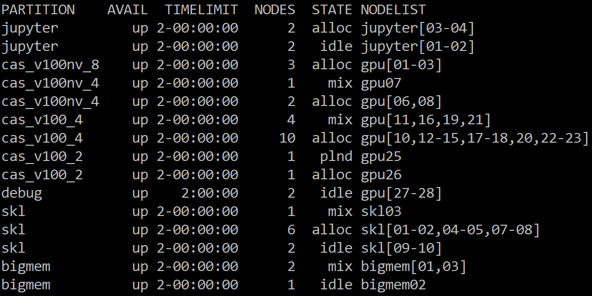
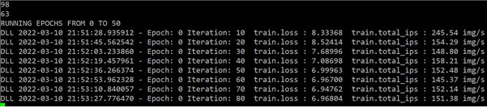
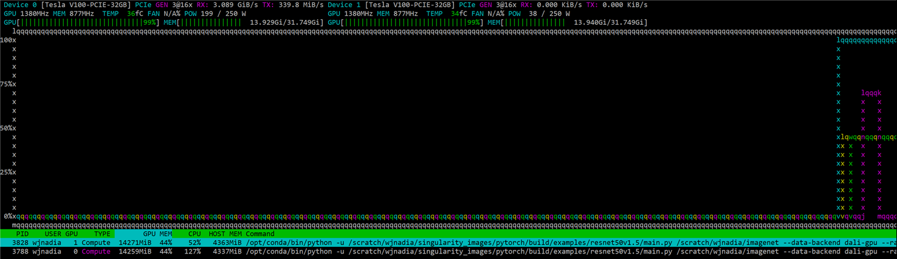

Singularity 컨테이너¶
싱귤레러티(Singularity)는 도커(Docker)와 같이 OS 가상화를 구현하기 위한 HPC 환경에 적합한 컨테이너 플랫폼입니다. 사용자 작업 환경에 적합한 리눅스 배포판, 컴파일러, 라이브러리, 애플리케이션 등을 포함하는 컨테이너 이미지를 빌드 및 동하여 사용자 프로그램을 실행할 수 있습니다.
Tensorflow, Pytorch와 같은 딥러닝 프레임워크와 Quantum Espresso, Lammps, Gromacs 등을 지원하는 빌드된 컨테이너 이미지는 **/apps/applications/singularity_images/ngc 디렉터리**에서 액세스 할 수 있습니다.

※ 가상머신은 애플리케이션이 하이퍼바이저와 게스트 OS를 거쳐 올라가는 구조이나, 컨테이너는 물리적인 하드웨어에 더 가까우며 별도의 게스트 OS가 아닌 호스트 OS를 공유하기 때문에 오버헤드가 더 적습니다. 최근 클라우드 서비스에서 컨테이너의 활용이 증가하고 있습니다.
(동영상가이드) 싱귤레러티 컨테이너 이미지 빌드 및 실행 방법 ¶
{% embed url="https://youtu.be/5PYAE0fuvBk?si=23ZvE7NhBAyZ9LM1" %}
¶
가. 컨테이너 이미지 빌드하기¶
1. 모듈 적재 및 자동 로드(Default) 설정¶
$ module load singularity/4.3.4 (singularity 4.3.4 버전 모듈 로드)
$ module list (현재 로드된 모듈 목록 확인)
$ module save default (로그인 시 자동 로드(default) 설정)
$ module savelist (저장된 설정 이름 확인)
{% hint style="info" %} info;">**새로운 기능 사용 및 보안 강화를 위해 최신**</mark>** **<mark style="color:danger;">4.3.4 버전info;">**만 제공됩니다. (**</mark><mark style="color:blue;">**하위 버전에서 빌드된 이미지 호환됨**</mark><mark style="color:info;">)
2. 로컬 빌드¶
- 뉴론 시스템의 로그인 노드에서 컨테이너 이미지를 로컬 빌드하기 위해서는, 먼저 **KISTI 홈페이지 > 기술지원 > 상담신청**을 통해 아래와 같은 내용으로 fakeroot 사용 신청을 해야합니다.
- 시스템명 : 뉴론
- 사용자 ID : a000bcd
- 요청사항 : 싱귤레러티 fakeroot 사용 설정
{% hint style="warning" %} danger;">**2026년 1월 8일**</mark><mark style="color:danger;"> 이후 신규 사용자는 계정 등록 시 자동 처리 되므로 신청할 필요가 없습니다.
- NGC(Nvidia GPU Cloud)에서 배포하는 도커 컨테이너로 부터 뉴론 시스템의 Nvidia GPU에 최적화된 딥러닝 프레임워크 및 HPC 애플리케이션 관련 싱규레러티 컨테이너 이미지를 빌드할 수 있습니다.
{% code title="[이미지 빌드 명령어] " overflow="wrap" %}
$ singularity [global options...] build [local options...] ＜IMAGE PATH＞ ＜BUILD SPEC＞
[주요 global options]
-d, --debug : 디버깅 정보를 출력함 (문제 발생 시 유용)
-v, --verbose : 빌드중 추가 실행 정보를 출력함
-q, --quiet: 출력을 최소화하고 에러 메시지만 표시함
--version : 싱귤레러티 버전 정보를 출력
[관련 주요 local options]
--fakeroot : roor 권한 없이 일반사용자가 가짜 root 사용자로 이미지 빌드 (대부분의 빌드에 권장)
--oci : OCI 규격(Docker 호환) 런타임 사용및 Dockerfile 기반 이미지 빌드 가능
--remote : 외부 싱귤레러티 클라우드(Sylabs Cloud)를 통한 원격 빌드(root 권한 필요 없음)
--sandbox : 빌드 결과물을 단일 파일(.sif)이 아닌, 수정 가능한 디렉터리 구조로 생성함(root 권한 필요)
--update: 기존 샌드박스 이미지에 새로운 내용을 추가하거나 업데이트할 때 사용함
--notest: 빌드 후 %test 섹션의 스크립트 실행을 생략함
＜IMAGE PATH＞
default : 읽기만 가능한 기본 이미지 파일(예시 : ubuntu1.sif)
sandbox* : 읽기 및 쓰기 가능한 디렉터리 구조의 컨테이너(예시 : ubuntu4)
* 개발 단계에서 패키지를 추가 설치하며 테스트할 때 유용
＜BUILD SPEC＞
definition file : 컨테이너를 빌드하기 위해 singularity 전용 recipe를 정의한 파일(예시 : ubuntu.def)
Dockerfile / Containerfile: OCI 표준 빌드 파일 (단, --oci 옵션 권장)
local image : 싱귤레러티 이미지 파일 혹은 샌드박스 디렉터리(IMAGE PATH 참조 바랍니다)
URI(원격저장소)
· docker:// Docker Hub 등도커 레지스트리에서 가져옴 (default 도커 허브)
· docker-archive:// docker save로 생성된 로컬 tar 파일에서 가져옴
· library:// Syslabs 컨테이너 라이브러리에서 가져옴 (default https://cloud.sylabs.io/library)
· oras:// OCI 아카이브를 지원하는 일반 레지스트리에서 가져
· oci-archive:// 로컬 OCI 표준 아카이브 파일에서 가져옴
{% endcode %}
① Definition 파일로부터 ubuntu1.sif 이미지 빌드하기
$ singularity build --fakeroot ubuntu1.sif ubuntu.def*
② 싱규레러티 라이브러리로부터 ubuntu2.sif 이미지 빌드하기
$ singularity build --fakeroot ubuntu2.sif library://ubuntu:22.04
③ 도커 허브로부터 ubuntu3.sif 이미지 빌드하기
$ singularity build --fakeroot ubuntu3.sif docker://ubuntu:22.04
④ 도커 tar 파일로부터 pytorch.sif 이미지 빌드하기
$ singularity build --fakeroot pytorch.sif docker-archive://pytorch.tar
⑤ NGC(Nvidia GPU Cloud) 도커 레지스트리로부터 '25년 12월 배포 pytorch 이미지 빌드하기
$ singularity build --fakeroot pytorch1.sif docker://nvcr.io/nvidia/pytorch:25.12-py3
⑥ Definition 파일로부터 pytorch.sif 이미지 빌드하기
$ singularity build --fakeroot pytorch2.sif pytorch.def**
⑦ Dockerfile을 사용하여 이미지 빌드하기
# OCI 규격(Docker 호환) 런타임 사용 및 Dockerfile 기반 이미지 빌드 가능
# 빌드된 이미지를 실행할 때도 --oci 옵션을 사용해야 함
# singularity 4.3.4 버전 이상에서 지원
$ singularity build --fakeroot --oci mpi.sif Dockerfile***
* ) ubuntu.def 예시
bootstrap: docker
from: ubuntu:22.04
%post
apt-get update
apt-get install -y wget bash gcc gfortran g++ make file
apt-get clean
%runscript
echo "hello world from ubuntu container!"
** ) pytorch.def 예시
# 로컬 이미지 파일로부터 콘다를 사용하여 새로운 패키지 설치를 포함한 이미지 빌드
bootstrap: localimage
from: /apps/applications/singularity_images/ngc/pytorch:25.12-py3.sif
%post
pip install jupyter
# 외부 NGC 도커 이미지로부터 콘다를 사용하여 새로운 패키지 설치를 포함한 이미지 빌드
bootstrap: docker
from: nvcr.io/nvidia/pytorch:25.12-py3
%post
pip install jupyter
*** ) Dockerfile 예시
FROM rockylinux:9
RUN dnf -y install openmpi openmpi-devel gcc make which && dnf clean all
ENV PATH=/usr/lib64/openmpi/bin:$PATH
WORKDIR /app
COPY ring.c /app/ring.c
RUN mpicc ring.c -O2 -o ring
CMD ["mpirun","--allow-run-as-root","-np","4","/app/ring"]
{% hint style="warning" %} danger;">**\[유의 사항]**</mark> <mark style="color:warning;">gpu[51-52] 계산 노드(GH200, ARM CPU 아키텍처)에서 singularity 컨테이너를 사용하고자 할 경우, 먼저 인터랙티브 작업 제출을 통해 gpu[51-52] 노드 중 하나에 접속하여 이 아키텍처와 호환이 되는 컨테이너 이미지를 빌드 해야 합니다.
3.cotainr 사용하여 빌드¶
cotainr은 사용자가 뉴론 및 자신의 시스템에서 사용중인 conda 패키지를 포함하는 싱귤레러티 컨테이너 이미지를 좀 더 쉽게 빌드할 수 있게 지원하는 도구입니다.
- 사용자 conda environment를 yml 파일로 export하여 사용자 conda 패키지를 포함하는 뉴론 시스템을 위한 사용자 싱귤레러티 컨테이너 이미지를 빌드할 수 있습니다.
- 뉴론 및 자신의 시스템에서 기존 conda environment를 yml 파일로 export 하는 방법은 아래와 같습니다.
(base) $ conda env export > my_conda_env.yml
{% code fullWidth="false" %}
(base) $ cat my_conda_env.yml <-- 예시
name: base
channels:
- pytorch
- nvidia
- defaults
dependencies:
- _libgcc_mutex=0.1=main
- _openmp_mutex=5.1=1_gnu
- blas=1.0=mkl
- brotli-python=1.0.9=py312h6a678d5_8
- bzip2=1.0.8=h5eee18b_6
- ca-certificates=2024.3.11=h06a4308_0
- certifi=2024.2.2=py312h06a4308_0
- charset-normalizer=2.0.4=pyhd3eb1b0_0
- cuda-cudart=12.1.105=0
- cuda-cupti=12.1.105=0
- cuda-libraries=12.1.0=0
- cuda-nvrtc=12.1.105=0
- cuda-nvtx=12.1.105=0
- cuda-opencl=12.4.127=0
- cuda-runtime=12.1.0=0
- expat=2.6.2=h6a678d5_0
- ffmpeg=4.3=hf484d3e_0
- filelock=3.13.1=py312h06a4308_0
......
{% endcode %}
cotainr을 사용하기 위해서는 module 명령을 사용하여 cotainr 모듈을 먼저 로드해야 합니다.
$ module load cotainr
cotainr build를 사용하여 컨테이너 이미지를 빌드할 때 컨테이너에 대한 --base-image 옵션을 사용하여 이미지를 직접 지정하거나, --system 옵션을 사용하여 뉴론 시스템에 권장되는 기본 이미지를 사용할 수 있습니다.
{% code overflow="wrap" fullWidth="false" %}
$ cotainr info
.....
System info
Available system configurations:
- neuron-cuda <- Ubuntu 22.04, CUDA 13.1, IB 사용자 라이브러리 등이 설치된 컨테이너 이미지
{% endcode %}
{% code overflow="wrap" fullWidth="false" %}
# 사용자 이미지 직접 지정
$ cotainr build --base-image=docker://nvcr.io/nvidia/cuda:13.1.0-devel-ubuntu22.04 --conda-env=my_conda_env.yml --accept-licenses my_container.sif
# 뉴론 시스템 기본 이미지 (Ubuntu 22.04, CUDA 13.1, IB 사용자 라이브러리 등 포함)
$ cotainr build --system=neuron-cuda --conda-env=my_conda_env.yml --accept-licenses my_container.sif
{% endcode %}
singularity exec 명령어로 빌드한 컨테이너 이미지를 실행하여 아래 예제와 같이 컨테이너에 생성된 conda environment 리스트를 확인할 수 있습니다.
$ singularity exec --nv my_container.sif conda env list
# conda environments:
#
base * /opt/conda/envs/conda_container_env
¶
4. 원격빌드¶
{% code overflow="wrap" fullWidth="false" %}
① Sylabs Cloud에서 제공하는 원격 빌드 서비스를 이용하여 Definition 파일로부터 ubuntu4.sif 이미지 빌드하기
$ singularity build --remote ubuntu4.sif ubuntu.def
{% endcode %}
{% hint style="info" %} Sylabs Cloud(https://cloud.sylabs.io)에서 제공하는 원격빌드 서비스를 이용하려면 액세스 토큰을 생성하여 뉴론 시스템에 등록해야 합니다. [참조 1]\ Sylabs Cloud에 웹 브라우저 접속을 통해서 싱귤레러티 컨테이너 이미지의 생성∙관리가 가능합니다. [참조 2]
5. 컨테이너 이미지 가져오기/내보내기¶
{% code fullWidth="false" %}
① Sylabs cloud 라이브러리에서 컨테이너 이미지 가져오기
$ singularity pull pytorch.sif singularity pull library://library://dxtr/default/hpc-pytorch:0.1
② 도커 허브에서 이미지를 가져와서 싱귤레러티 이미지로 변환
$ singularity pull pytorch.sif docker://pytorch/pytorch:2.10.0-cuda13.0-cudnn9-devel
③ Sylabs Cloud 라이브러리에 싱귤레러티 이미지 내보내기(업로드)
$ singularity push -U pytorch.sif library://ID/default/pytorch.sif
{% endcode %}
{% hint style="info" %} Sylabs Cloud 라이브러리에 컨테이너 이미지를 내보내기(업로드) 위해서는 먼저 액세스 토큰을 생성하여 뉴론 시스템에 등록해야 합니다. [참조 1]
나. 싱귤레러티 컨테이너에서 사용자 프로그램 실행¶
1. 싱귤레러티 모듈 적재 및 자동 로드(Default) 설정¶
$ module load singularity/4.3.4 (singularity 4.3.4 버전 모듈 로드)
##(필요시) Singularity를 포함한 자주 사용하는 모듈들이 자동 로드 되도록 설정
$ module list (현재 로드된 모듈 목록 확인)
$ module save default (로그인 시 자동 로드(default) 설정)
$ module savelist (저장된 설정 이름 확인)
2. 싱귤레러티 컨테이너에서 프로그램 실행 명령어¶
$ singularity [global options...] shell [shell options...] ＜container＞
$ singularity [global options...] exec [exec options...] ＜container＞ ＜command＞
$ singularity [global options...] run [run options...] ＜container＞
{% code title="[예제]" overflow="wrap" fullWidth="false" %}
① Nvidia GPU 장착 계산 노드의 싱귤레러티 컨테이너에서 쉘 실행 후 사용자 프로그램 실행
$ singularity shell --nv＊ pytorch:25.12-py3.sif
Singularity> python test.py
② Nvidia GPU 장착 계산 노드의 싱귤레러티 컨테이너에서 사용자 프로그램 실행
$ singularity exec --nv pytorch:25.12-py3.sif python test.py
$ singularity exec --nv docker://python:latest python test.py
$ singularity exec --nv library://dxtr/default/hpc-pytorch python test.py
③ Nvidia GPU 장착 계산 노드의 싱귤레러티 컨테이너에서 runscript(이미지 빌드 시 생성)가 존재하면 이 스크립트를 먼저 실행한 후,
사용자 명령어(아래 예제에서 python --version)가 존재하면 이어서 실행됩니다.
$ singularity run --nv /apps/applications/singularity_images/ngc/pytorch:25.12-py3.sif python --version
=============
== PyTorch ==
=============
NVIDIA Release 25.12 (build 245654590)
PyTorch Version 2.10.0a0+b4e4ee8
Container image Copyright (c) 2025, NVIDIA CORPORATION & AFFILIATES. All rights reserved.
Copyright (c) 2014-2024 Facebook Inc.
Copyright (c) 2011-2014 Idiap Research Institute (Ronan Collobert)
Copyright (c) 2012-2014 Deepmind Technologies (Koray Kavukcuoglu)
Copyright (c) 2011-2012 NEC Laboratories America (Koray Kavukcuoglu)
Copyright (c) 2011-2013 NYU (Clement Farabet)
Copyright (c) 2006-2010 NEC Laboratories America (Ronan Collobert, Leon Bottou, Iain Melvin, Jason Weston)
Copyright (c) 2006 Idiap Research Institute (Samy Bengio)
Copyright (c) 2001-2004 Idiap Research Institute (Ronan Collobert, Samy Bengio, Johnny Mariethoz)
Copyright (c) 2015 Google Inc.
Copyright (c) 2015 Yangqing Jia
Copyright (c) 2013-2016 The Caffe contributors
All rights reserved.
Various files include modifications (c) NVIDIA CORPORATION & AFFILIATES. All rights reserved.
GOVERNING TERMS: The software and materials are governed by the NVIDIA Software License Agreement
(found at https://www.nvidia.com/en-us/agreements/enterprise-software/nvidia-software-license-agreement/)
and the Product-Specific Terms for NVIDIA AI Products
(found at https://www.nvidia.com/en-us/agreements/enterprise-software/product-specific-terms-for-ai-products/).
NOTE: CUDA Forward Compatibility mode ENABLED.
Using CUDA 13.1 driver version 590.44.01 with kernel driver version 580.105.08.
See https://docs.nvidia.com/deploy/cuda-compatibility/ for details.
NOTE: Mellanox network driver detected, but NVIDIA peer memory driver not
detected. Multi-node communication performance may be reduced.
Python 3.12.3
{% endcode %}
{% hint style="info" %} 싱귤레러티의 명령어[shell | exec | run | pull ...] 별 도움말을 보려면 “singularity help [command]”를 실행합니다.
계산/로그인 노드에서 Nvidia GPU를 사용하기 위해서는 --nv 옵션을 사용해야 합니다.
싱귤레러티 --oci 옵션을 사용하여 빌드된 이미지를 실행하기 위해서는 반드시 --oci 옵션을 사용해야 합니다.
3. NGC 컨테이너 모듈을 사용하여 사용자 프로그램 실행¶
모듈 명령어를 사용하여 NGC 싱규레러티 컨테이너 이미지와 관련된 모듈을 로드하면 싱귤레러티 명령어를 입력하지 않아도 자동으로 컨테이너 이미지가 구동되어 좀 더 쉽게 싱귤레러티 컨테이너에서 사용자 프로그램을 실행할 수 있습니다.
- NGC 컨테이너 모듈을 로드하여 컨테이너에서 사용자 프로그램 실행하기
{% code overflow="wrap" %}
① tensorflow 1.15.5 지원 싱규레러티 컨테이너 이미지(tensorflow_22.03-tf1-keras-py3.sif)를 자동으로 구동하여 사용자 프로그램 실행
$ module load ngc/tensorflow:25.02-tf2-py3
$ mpirun -H gpu39:2,gpu44:2 –n 4 python keras_imagenet_resnet50.py
② lammps 지원 싱규레러티 컨테이너 이미지(lammps:patch_15Jun2023.sif)를 자동으로 구동하여 lammps 실행
$ module load ngc/lammps:patch_15Jun2023 gcc/15.2.0 mpi/openmpi-4.1.8
$ mpirun –H gpu39:2,gpu44:2 -n 4 lmp -in in.lj.txt -var x 8 -var y 8 -var z 8 -k on g 2 \
-sf kk -pk kokkos cuda/aware on neigh full comm device binsize 2.8
③ gromacs 지원 싱규레러티 컨테이너 이미지(gromacs:2020.2-x86_64.sif)를 자동으로 구동하여 gromacs 실행
$ module ngc/gromacs:2020.2
$ gmx mdrun -ntmpi 2 -nb gpu -ntomp 1 -pin on -v -noconfout –nsteps 5000 \
–s topol.tpr singularity shell --nv＊ tensorflow:20.09-tf1-py3.sif
{% endcode %}
{% hint style="info" %} 컨네이너 이미지 모듈 로드 후 실행명령어 입력만으로 “singularity run --nv <컨테이너> [실행명령어]”가 자동 실행됩니다.
- NGC 컨테이너 모듈 리스트
{% hint style="info" %} NGC(https://ngc.nvidia.com)에서 Nvidia GPU에 최적화하여 빌드 배포한 도커 컨테이너 이미지를 싱귤레러티로 변환합니다.\ 컨테이너 이미지 파일 경로 : /apps/applications/singularity_images/ngc
1009% [a123a01@glogin01 ngc]$ module av
-- [중략] --
----------------------------------------------------------------------------------------- /apps/Modules/modulefiles/ngc -----------
ngc/gromacs:2020.2 ngc/lammps:patch_15Jun2023 ngc/pytorch:24.12-py3 ngc/qe:6.7 ngc/tensorflow:25.02-tf2-py3 (D)
-- [중략] --
¶
4. 스케줄러(SLURM)를 통한 컨테이너 실행 방법¶
- GPU 싱귤레러티 컨테이너 작업 실행
1) 작업 스크립트를 작성하여 배치 형태 작업 실행¶
- 실행 명령어 : sbatch＜작업 스크립트 파일＞
[id@glogin01]$ sbatch job_script.sh
Submitted batch job 12345
{% hint style="info" %} 자세한 스케줄러(SLURM) 사용 방법은 "뉴론 지침서-스케줄러(SLURM)를 통한 작업실행" 참조 바랍니다.
[참조 3]를 통해 병렬 학습 실행 예제 프로그램을 따라해 볼 수 있습니다.
2) 스케줄러가 할당한 계산 노드에서 인터랙티브 작업 실행¶
- 스케줄러를 통해 계산노드를 할당받아 첫번째 계산노드에 쉘 접속 후 인터렉티브 모드로 사용자 프로그램 실행합니다.
{% code overflow="wrap" %}
[id@glogin01]$ srun --partition=cas_v100_4 --nodes=1 --ntasks-per-node=2 --cpus-per-task=10 --gres=gpu:2 --comment=pytorch --pty bash
[id@gpu10]$
[id@gpu10]$ module load singularity/4.3.4
[id@gpu10]$ singularity run --nv /apps/applications/singularity_images/ngc/pytorch:25.12-py3.sif python test.py
{% endcode %}
{% hint style="info" %} 1노드 점유, 노드 당 2 타스크, 타스크 당 10 CPUs, 노드 당 2GPU 사용 예제
- GPU 싱귤레러티 컨테이너 작업 스크립트 예시
1) 단일 노드¶
- 실행 명령어 : singularity run --nv <컨테이너> [사용자 프로그램 실행 명령어]
{% code overflow="wrap" %}
#!/bin/sh
#SBATCH –J pytorch # job name
#SBATCH --time=1:00:00 # wall_time
#SBATCH -p cas_v100_4
#SBATCH --comment pytorch # application name
#SBATCH --nodes=1
#SBATCH --ntasks-per-node=2
#SBATCH --cpus-per-task=10
#SBATCH –o %x_%j.out
#SBATCH -e %x_%j.err
#SBATCH —gres=gpu:2 # number of GPUs per node
module load singularity/4.3.4
singularity run --nv /apps/applications/singularity_images/ngc/pytorch:25.12-py3.sif python test.py
{% endcode %}
{% hint style="info" %} 1노드 점유, 노드 당 2 타스크, 타스크 당 10 CPUs, 노드 당 2GPU 사용 예제
2) 멀티 노드-1 ¶
- 실행 명령어 : srun singularity run --nv <컨테이너> [사용자 프로그램 실행 명령어]
{% code overflow="wrap" %}
#!/bin/sh
#SBATCH –J pytorch_horovod # job name
#SBATCH --time=1:00:00 # wall_time
#SBATCH –p cas_v100_4 # partition name
#SBATCH --comment pytorch # application name
#SBATCH --nodes=2
#SBATCH --ntasks-per-node=2
#SBATCH --cpus-per-task=10
#SBATCH –o %x_%j.out
#SBATCH -e %x_%j.err
#SBATCH --gres=gpu:2 # number of GPUs per node
module load singularity/4.3.4 gcc/4.8.5 mpi/openmpi-3.1.5
srun singularity run --nv /apps/applications/singularity_images/ngc/pytorch:24.12-py3-hvd.sif \
python pytorch_imagenet_resnet50.py
{% endcode %}
{% hint style="info" %} 2노드 점유, 노드 당 2 타스크(총 4개 MPI 프로세스-horovod 사용), 타스크 당 10CPUs, 노드 당 2GPU 사용 예제
3) 멀티 노드-2¶
- NGC 컨테이너 모듈을 로드하면 사용자 프로그램 실행 시 지정된 싱귤레러티 컨테이너를 자동으로 구동합니다.
- 실행 명령어 : mpirun_wrapper [사용자 프로그램 실행 명령어]
#!/bin/sh
#SBATCH –J pytorch_horovod # job name
#SBATCH --time=1:00:00 # wall_time
#SBATCH –p cas_v100_4 # partition name
#SBATCH --comment pytorch # application name
#SBATCH --nodes=2
#SBATCH --ntasks-per-node=2
#SBATCH --cpus-per-task=10
#SBATCH –o %x_%j.out
#SBATCH -e %x_%j.err
#SBATCH --gres=gpu:2 # number of GPUs per node
module load singularity/4.3.4 ngc/pytorch:24.12-py3
mpirun_wrapper python pytorch_imagenet_resnet50.py
{% hint style="info" %} 2노드 점유, 노드 당 2 타스크(총 4개 MPI 프로세스-horovod 사용), 타스크 당 10CPUs, 노드 당 2GPU 사용 예제
¶
다. 참조¶
[참조1] Sylabs Cloud 액세스 토큰 생성 및 뉴론 시스템에 토큰 등록하기 ¶


[참조2] 웹 브라우저에서 리모트 빌더에 의한 싱귤레러티 컨테이너 빌드하기 ¶


[참조3] 병렬 학습 프로그램 실행 예제 ¶
- 아래 예제는 싱귤레러티 컨테이너에서 pytorch 혹은 keras(tensorflow)로 작성된 resnet50 모델을 사용하여 imagenet 이미지 분류를 위한 병렬 학습 실행을 사용자가 직접 따라해 볼 수 있도록 구성됩니다.
{% code overflow="wrap" %}
▪ 병렬 학습 작업 스크립트 경로 : /apps/applications/singularity_images/examples
▪ 컨테이너 이미지 디렉터리 경로 : /apps/applications/singularity_images/ngc
▪ 병렬 학습 예제 프로그램 경로
- pytorch 프로그램
(단일노드) /apps/applications/singularity_images/examples/pytorch/resnet50v1.5
(멀티노드-horovod) /apps/applications/singularity_images/examples/horovod/examples/pytorch
- keras(Tensorflow) 프로그램
(멀티노드-horovod) /apps/applications/singularity_images/examples/horovod/examples/keras
▪ imagent 이미지 데이터 경로
- (학습 데이터) /apps/applications/singularity_images/imagenet/train
- (검증 데이터) /apps/applications/singularity_images/imagenet/val
{% endcode %}
1) /apps/applications/singularity_images/examples 디렉터리에서 아래 작업 스크립트 파일을 사용자 작업 디렉터리로 복사합니다.
{% code overflow="wrap" %}
[a1234b5@glogin01]$ cp /apps/applications/singularity_images/examples/*.sh /scratch/ID/work/
{% endcode %}
2) STATE가 idle 상태인 계산 노드가 있는 파티션을 확인합니다.\ 아래 예제에서는 cas_v100nv_8, cas_v100nv_4, cas_v100_4, cas_v100_2 등의 파티션에 가용 계산노드가 존재합니다.
[a1234b5@glogin01]$ sinfo

3) 작업 스크립트 파일에서 작업명(-J), wall_time(--time), 작업 큐(-p), Application이름(--comment), 계산노드 자원 요구량(--nodes, --ntasks-per-node, --gres) 등의 스케줄러 옵션과 학습 프로그램의 파라미터를 변경합니다.
{% code overflow="wrap" %}
[a1234b5@glogin01]$ vi 01.pytorch.sh
#!/bin/sh
#SBATCH -J pytorch #job name
#SBATCH --time=24:00:00 # walltime
#SBATCH --comment=pytorch # application name
#SBATCH -p cas_v100_4 # partition name (queue or class)
#SBATCH --nodes=1 # number of nodes
#SBATCH --ntasks-per-node=2 # number of tasks per node
#SBATCH --cpus-per-task=10 # number of cpus per task
#SBATCH -o %x_%j.out
#SBATCH -e %x_%j.err
#SBATCH --gres=gpu:2 # number of GPUs per node
## Training Resnet-50(Pytorch) for image classification on single node & multi GPUs
Base=/apps/applications/singularity_images
module load ngc/pytorch:24.12-py3
python $Base/examples/pytorch/resnet50v1.5/multiproc.py --nproc_per_node 2 $Base/examples/pytorch/resnet50v1.5/main.py $Base/imagenet \
--data-backend dali-gpu --raport-file report.json -j2 --arch resnet50 -c fanin --label-smoothing 0.1 -b 128 --epochs 50
{% endcode %}
4) 스케줄러에 작업을 제출합니다.
[a1234b5@glogin01]$ sbatch 01.pytorch.sh
Submitted batch job 99982
5) 스케줄러에 의해 할당된 계산 노드를 확인합니다.
[a1234b5@glogin01]$ squque –u a1234b5
JOBID PARTITION NAME USER STATE TIME TIME_LIMI NODES NODELIST(REASON)
99982 cas_v100_2 pytorch a1234b5 RUNNING 10:13 24:00:00 1 gpu41
6) 스케줄러에 의해 생성되는 로그 파일을 모니터링 합니다.
[a1234b5@glogin01]$ tail –f pytorch_99982.out
or
[a1234b5@glogin01]$ tail –f pytorch_99982.err

7) 스케줄러에 의해 할당된 계산 노드에서 학습 프로세스 및 GPU 활용 현황을 모니터링 합니다.
[a1234b5@glogin01]$ ssh gpu41
[a1234b5@gpu41]$ module load nvtop
[a1234b5@gpu41]$ nvtop

- 작업 스크립트
1) pytorch 단일 노드 병렬 학습(01.pytorch.sh)¶
{% code overflow="wrap" %}
#!/bin/sh
#SBATCH -J pytorch #job name
#SBATCH --time=24:00:00 # walltime
#SBATCH --comment=pytorch # application name
#SBATCH -p cas_v100_4 # partition name (queue or class)
#SBATCH --nodes=1 # number of nodes
#SBATCH --ntasks-per-node=2 # number of tasks per node
#SBATCH --cpus-per-task=10 # number of cpus per task
#SBATCH -o %x_%j.out
#SBATCH -e %x_%j.err
#SBATCH --gres=gpu:2 # number of GPUs per node
## Training Resnet-50(Pytorch) for image classification on single node & multi GPUs
Base=/apps/applications/singularity_images
module load ngc/pytorch:24.12-py3
python $Base/examples/pytorch/resnet50v1.5/multiproc.py --nproc_per_node 2 $Base/examples/pytorch/resnet50v1.5/main.py $Base/imagenet \
--data-backend dali-gpu --raport-file report.json -j2 --arch resnet50 -c fanin --label-smoothing 0.1 -b 128 --epochs 50
{% endcode %}
{% hint style="info" %} 1노드 점유, 노드 당 2 타스크, 타스크 당 10 CPUs, 노드 당 2GPU 사용
2) pytorch_horovod 멀티 노드 병렬 학습(02.pytorch_horovod.sh)¶
{% code overflow="wrap" %}
#!/bin/sh
#SBATCH -J pytorch_horovod # job name
#SBATCH --time=24:00:00 # walltime
#SBATCH --comment=pytorch # application name
#SBATCH -p cas_v100_4 # partition name (queue or class)
#SBATCH --nodes=2 # the number of nodes
#SBATCH --ntasks-per-node=2 # number of tasks per node
#SBATCH --cpus-per-task=10 # number of cpus per task
#SBATCH -o %x_%j.out
#SBATCH -e %x_%j.err
#SBATCH --gres=gpu:2 # number of GPUs per node
## Training Resnet-50(Pytorch horovod) for image classification on multi nodes & multi GPUs
Base=/apps/applications/singularity_images
module load ngc/pytorch:24.12-py3
mpirun_wrapper \
python $Base/examples/horovod/examples/pytorch/pytorch_imagenet_resnet50.py \
--batch-size=128 --epochs=50
{% endcode %}
{% hint style="info" %} 2노드 점유, 노드 당 2 MPI 타스크, 타스크 당 10 CPUs, 노드 당 2GPU 사용
3) keras(tensorflow)_horovod 멀티 노드 병렬 학습(03.keras_horovod.sh)¶
{% code overflow="wrap" %}
#!/bin/sh
#SBATCH -J keras_horovod # job name
#SBATCH --time=24:00:00 # walltime
#SBATCH --comment=tensorflow # application name
#SBATCH -p cas_v100_4 # partition name (queue or class)
#SBATCH --nodes=2 # the number of nodes
#SBATCH --ntasks-per-node=2 # number of tasks per node
#SBATCH --cpus-per-task=10 # number of cpus per task
#SBATCH -o %x_%j.out
#SBATCH -e %x_%j.err
#SBATCH --gres=gpu:2 # number of GPUs per node
## Training Resnet-50(Keras horovod) for image classification on multi nodes & multi GPUS
Base=/apps/applications/singularity_images/examples
module load ngc/tensorflow:25.02-tf2-py3
mpirun_wrapper python $Base/horovod/examples/keras/keras_imagenet_resnet50.py \
--batch-size=128 --epochs=50
{% endcode %}
{% hint style="info" %} 2노드 점유, 노드 당 2 MPI 타스크, 타스크 당 10 CPUs, 노드 당 2GPU 사용
{% hint style="info" %} 2023년 3월 2일에 마지막으로 업데이트 되었습니다.